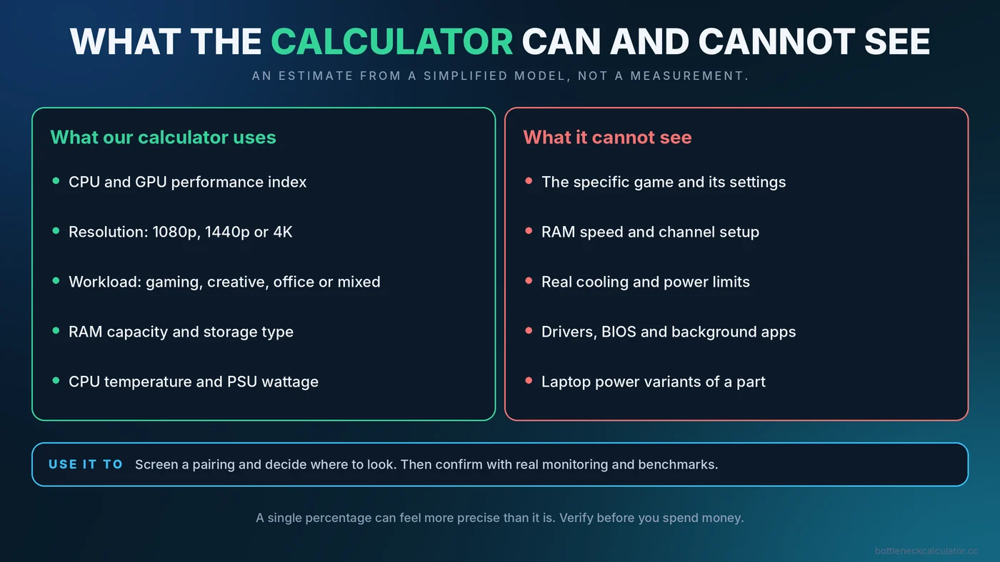
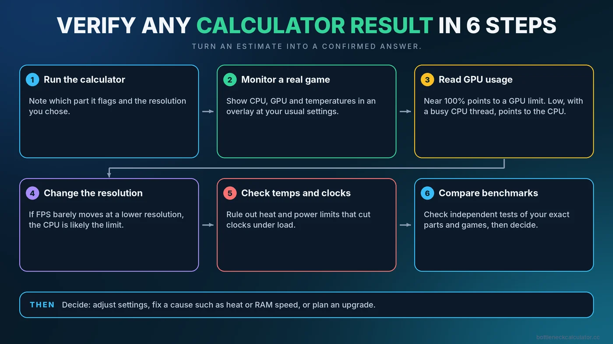

How Accurate Are Bottleneck Calculators? What They Can and Cannot Tell You
A bottleneck calculator gives you a quick answer, but a quick answer is not the same as a measured one. We build one ourselves, so we would rather tell you plainly where it is useful and where you should not trust it on its own. This guide explains how these tools work, why their results can disagree with real games, and how to check a result properly.

Short Answer: Useful as a Screening Tool, Not as a Measurement
A bottleneck calculator is an estimate based on a simplified model. It can tell you whether two parts are roughly well matched and which one is likely to limit the other. It cannot measure what your PC does in a particular game with your settings, drivers, cooling and background software. Think of it as a smoke detector, not a diagnosis: it tells you where to look, and real monitoring tells you what is happening.
How a Typical Bottleneck Calculator Works
Most calculators follow the same basic recipe, and ours is no different. It assigns each CPU and GPU a relative performance score from a built-in list, adjusts those scores for the resolution and kind of workload you choose, and compares them. The wider the gap between the adjusted CPU and GPU scores, the less balanced the pairing looks, and the part with the lower adjusted score is flagged as the likely limit. Our tool also scores factors such as memory capacity, temperature, storage type and power supply headroom, and combines them into an overall health figure.
That model is deliberately simple. It is built from average expectations, not from running your game on your machine, which is exactly why it has limits.
Why Results Can Disagree With Real Games
Every game loads the system differently
A competitive shooter at low settings can be limited by the CPU, while a visually heavy single-player game on the same PC is limited by the GPU. A single score per part cannot capture this. The same pairing may show up as balanced in one title and unbalanced in another.
Graphics settings change the balance
Raising texture quality, ray tracing or render scale shifts work toward the GPU, while lowering them shifts it toward the CPU. A calculator knows your resolution but not your exact settings. Read our guide to the GPU bottleneck to see how much settings matter.
Resolution and refresh rate matter
Higher resolution leans on the GPU, and higher frame rates lean on the CPU. A calculator that offers three resolution choices cannot represent every case in between. See our resolution bottleneck guide.
Parts are more than their names
- Memory speed and channels can shift CPU-limited performance, as covered in does RAM speed affect FPS.
- Cooling and power limits can lower clocks well below spec. See thermal throttling vs CPU bottleneck.
- Laptop variants of a part can run far below desktop versions, as explained in the laptop bottleneck guide.
- Drivers, BIOS settings and background apps influence results but are invisible to a calculator.
The parts list is finite
Any calculator can only include the models it has data for. New releases, rare models and older components may be missing or approximated by a similar part. Treat a result for a missing or substituted part with extra caution.
What a Calculator Is Good For
- Planning a build. Spotting a badly mismatched CPU and GPU before you buy.
- Comparing upgrade options. Checking whether a new graphics card would be held back by your current processor.
- Learning. Seeing how resolution and workload shift the balance in a simple model.
- Deciding where to look first. A flagged part is a good starting point for real testing.
What It Cannot Tell You
| Question | Can a calculator answer it? | Better way to check |
|---|---|---|
| Is this CPU and GPU pairing roughly balanced? | Yes, as an estimate | Confirm with usage numbers during play |
| What FPS will I get in my game? | No | Independent benchmarks of your exact games and settings |
| Is my PC stuttering because of a bottleneck? | No | Frame time and 1% lows. See the stuttering guide |
| Is my cooler holding my CPU back? | Only roughly | Monitor temperatures and clocks under load |
| Is my RAM running at its rated speed? | No | Check Task Manager. See how to enable XMP or EXPO |
| Will the motherboard support this CPU? | No | The motherboard maker's CPU support list. See the motherboard guide |
An Example of Why You Should Verify
This is a hypothetical illustration, not a test result. Suppose a calculator rates a processor and graphics card as closely balanced at 1440p. In a competitive game at low settings and a very high frame rate, you could still find the CPU maxed out on one thread while the GPU idles, because that game rewards single-thread speed and runs at far higher frame rates than the model assumes. The estimate was reasonable for typical use and wrong for that specific case. Real monitoring would show it immediately.
A Reliable Way to Verify Any Calculator Result
- Run the calculator and note which part it flags and the resolution you chose.
- Run a real game at your usual settings, with a monitoring overlay showing CPU, GPU and temperatures. Our guide on how to check PC usage explains the tools.
- Read GPU usage. Near 100% points to a GPU limit. Well below that, with a busy CPU thread, points to a CPU limit. The bottleneck checking guide covers the details.
- Change the resolution and see if FPS moves. If FPS barely changes at a lower resolution, the CPU is likely the limit.
- Check temperatures and clocks to rule out heat.
- Compare with independent benchmarks for your parts and games, and weigh both sources.
For a complete step-by-step method, see our bottleneck checker walkthrough.

How to Read the Percentage Sensibly
A single number can feel more precise than it is. A small percentage does not guarantee a perfect experience, and a large one is not always a problem. Our guide on what a good bottleneck percentage is explains how to interpret ranges without overreacting.
How to Choose Calculators and Advice You Can Trust
- Prefer tools that explain their method and admit their limits.
- Be wary of any page that gives exact FPS predictions or promises certainty.
- Check that the tool includes your exact parts and a sensible choice of workloads.
- Always cross-check with real monitoring and independent reviews.
- Avoid decisions that hinge on a single percentage, especially expensive ones.
Conclusion
A bottleneck calculator is a fast, free way to spot an obvious mismatch and decide what to investigate. It is not a benchmark, and it cannot see your settings, cooling, memory configuration or the game you play. Use it to narrow the question, then confirm the answer with real data before you spend money. You can try ours free at the PC Bottleneck Calculator, and then follow the verification steps above.
Frequently Asked Questions
Are bottleneck calculators accurate?
They give reasonable estimates for how well two parts are matched, but they are not measurements. Real results depend on the game, settings, memory, cooling and drivers, so verify with in-game monitoring.
Why does the calculator say one thing and my PC does another?
Calculators use simplified models and average assumptions. Your actual game, settings, resolution, refresh rate and system configuration can shift the balance in ways the model cannot see.
Can a bottleneck calculator predict my FPS?
No. It estimates balance between parts, not frame rate. For FPS, look at independent benchmarks of your exact games and settings.
Should I buy a part because a calculator recommends it?
Use the result as a starting point, not a final decision. Check reviews, compatibility and real benchmarks, especially for an expensive purchase.
What is a better way to find a bottleneck?
Monitor CPU and GPU usage and temperatures while playing, then test at a different resolution. A GPU near full usage points to a GPU limit, while low GPU usage with a busy CPU thread points to a CPU limit.